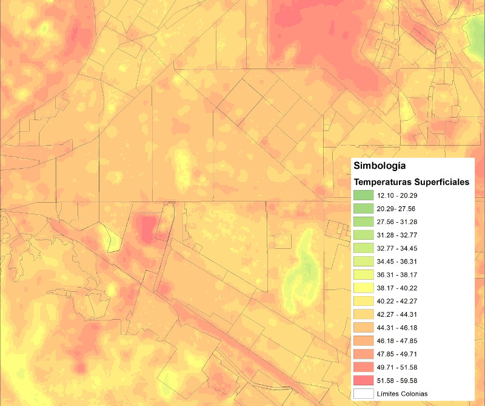

Las ciudades generan el 70% de las emisiones actuales de Gases de Efecto Invernadero (GEI) y este aumento en las emisiones son los causantes del calentamiento global y responsables del alza de las temperaturas a nivel global.
La isla de calor es un efecto que, a diferencia de las ondas cálidas, se genera por el establecimiento y construcción del entorno urbano y no por fenómenos naturales, es decir por los cañones urbanos (edificios y calles) donde el calor acumulado en la superficie tiene mayor dificultad para dispersarse (CENAPRED, 2020).
Si pudiéramos definir con un color a la ciudad este probablemente sería el gris, por los colores de los materiales con que se crea el entorno urbano, las edificaciones, las carreteras, las banquetas, los puentes, etc. las ciudades al desarrollarse van eliminando los entornos naturales, para sustituirlos por hormigón, acero y dar paso a la urbanización.
Además, las ciudades por su propia dinámica generan cada vez más calor, los edificios necesitan de sistemas de aire acondicionado, el tráfico, las actividades industriales, emiten una cantidad de calor que modifica el balance energético de las áreas urbanas. Esto trae consigo importantes consecuencias para el medio ambiente y para la salud de sus habitantes. La radiación que nos llega del sol se acumula sobre la superficie de la tierra, pero de forma diferenciada, es decir dependiendo de la superficie se absorbe o sencillamente se refleja, los ambientes urbanos a diferencia de los naturales absorben mucha energía y la liberan gradualmente.
Las calurosas noches que perturban el sueño de los que habitamos la ciudad es una forma de ejemplificar las islas de calor, cuando el sol se ha ido, el concreto y el asfalto liberan lentamente el calor acumulado durante el día, es decir, cuando la periferia y las zonas rurales ya se han enfriado en las áreas densamente urbanizadas como el centro de la ciudad siguen tibios.
Además, las ciudades generan el 70% de las emisiones actuales de Gases de Efecto Invernadero (GEI) y este aumento en las emisiones son los causantes del calentamiento global y responsables del alza de las temperaturas a nivel global debido a la acumulación de radiación que se refleja en la superficie del suelo.
La apuesta es que podamos ser conscientes de este fenómeno y que nuestras ciudades sean más adecuadas para la vida urbana en esta época del cambio climático. Las previsiones de ONU-HABITAT indican que para el 2030 el 60% de la población mundial vivirá en ciudades.
Tomando en cuenta lo anterior, la forma en cómo se construye la ciudad puede tener efectos significativos para amortiguar o para elevar aún más las temperaturas. Por eso es necesario urbanizar de forma inteligente y en sintonía con el sistema natural, es decir, así como las superficies urbanizadas influyen en la generación de calor, las zonas verdes actúan con un efecto contrario, mitigando los efectos y contrarrestando el aumento de la temperatura dentro de la ciudad.
En el IMPLAN Torreón se han realizado análisis de temperaturas superficiales utilizando imágenes satelitales, a través de estos estudios se han determinado las posibles islas de calor y a su vez la capacidad de las áreas verdes como espacios de amortiguamiento. Analizando una imagen satelital de Torreón con las temperaturas superficiales se puede observar que el cambio de temperatura es muy significativo de un área con capa vegetal a una cuadra contigua que no la tiene, por ejemplo, bosque Venustiano Carranza a la avenida Mariano López Ortiz hay una diferencia de hasta 5 grados centígrados.
En Torreón se cuenta con importantes áreas verdes, pero resultan insuficientes para mejorar el clima urbano de la ciudad, por ejemplo, se estima un total de 4 metros cuadrados de área verde por habitante, estando por debajo de la media óptima sugerida por ONU-HABITAT que es de 15 metros cuadrados. Esto implica en primera instancia duplicar el espacio de áreas verdes para mantener una temperatura ambiente menor a la esperada para los próximos años. Si queremos evitar el fenómeno de la isla de calor debemos aumentar la superficie de áreas verdes en zonas desprovistas de vegetación, reforestar y dar mantenimiento a las existentes y así poder regular las temperaturas máximas que se esperan se presenten en los próximos años.

Fuentes:
http://www.cenapred.gob.mx/es/Publicaciones/archivos/317-INFOGRAFAQUONDACONELCALOR.PDF
https://onuhabitat.org.mx/index.php/las-ciudades-causa-y-solucion-del-cambio-climatico
Plan de Infraestructura Verde para la Ciudad de Torreón.